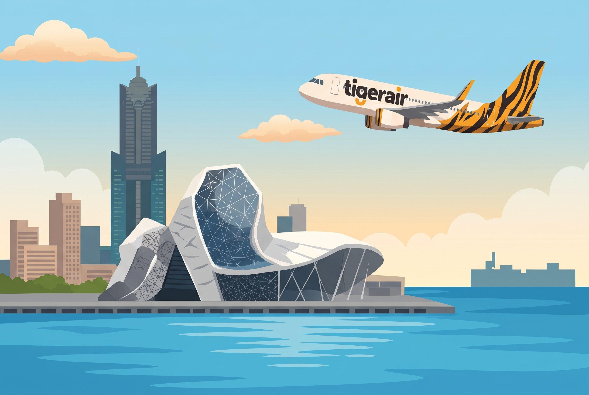

ZULU
00:00:00Z
航線網絡
時刻表
機隊資料
組織成員
關於我們
組員登入
加入我們
航線網絡與航點資訊
Station Map
比照真實虎航航點資訊，點選卡片或地圖即可檢視各地航廈與櫃檯。
📍 航點資訊 (Destinations)
台灣 (Taiwan)
TPE
台北 (桃園)
航廈：
第一航廈
櫃檯：
7 號櫃檯
RMQ
台中
航廈：
國際航廈
櫃檯：
機場公司安排

KHH
高雄
航廈：
國際航廈
櫃檯：
機場公司安排
TNN
台南
航廈：
國際航廈
櫃檯：
機場公司安排
當前航網：
台北桃園 (TPE)
顯示全航網連線